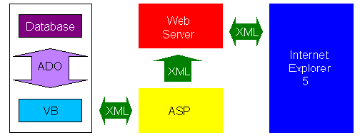

|
| ||
|
| ||
Charlie Heinemann
Program Manager
Microsoft Corporation
June 21, 1999
 Download the source code for this article (zipped, 534K)
Download the source code for this article (zipped, 534K)
The following article previously appeared in the MSDN Online Voices "Extreme XML" column.
A couple of weeks ago, I spoke to a large company about XML. The point of this talk was to describe the extent of Microsoft's XML parser support and to give the Microsoft® Visual Basic®, Visual C++®, Java, and Web developers within the company an idea as to where XML fits into their world. This article explains some of the points that I made during this talk.
Support for XML within products and applications makes XML viable. However, the true star of the show is the XML Standard itself. The XML Standard creates the opportunity for applications to ship data across the Web without concern for the platform on which the receiving application sits. The XML Standard enables interoperability between platforms and applications by allowing any application to interact with the data of another as long as that application can read in a text stream.
One of the demos I presented at the talk illustrates this concept. In the demo, I have a Visual Basic application grab data from a Microsoft Access database using Active Data Objects (ADO). I then persist the ADO recordset to XML and POST that XML to the server. Once the data is written to the server, I can process that data using a Web application (using Internet Explorer 5), eventually displaying the data in the browser.

In this particular case, all the applications were running in a Windows® environment. This isn't necessary, however. Any of the tiers within the application could have been replaced with applications running on another platform, provided that the applications could read in and process XML.
The data's no good if you can't get at it efficiently and in ways that make sense. With the MSXML parser, we expose the XML as a tree and offer the XML Object Model as a means to accessing and manipulating that tree. This object model is compliant with the World Wide Web Consortium (W3C)  Document Object Model, and includes a number of methods and properties that extend this functionality. This provides the developer with support for XSL, XSL patterns, and schema from within the object model. If you bind to XML within a Web page using the XMLDSO, you can also access the data using ADO. This means that your data is exposed as a recordset with child rowsets.
Document Object Model, and includes a number of methods and properties that extend this functionality. This provides the developer with support for XSL, XSL patterns, and schema from within the object model. If you bind to XML within a Web page using the XMLDSO, you can also access the data using ADO. This means that your data is exposed as a recordset with child rowsets.
The XML object model is available to script, Visual Basic, and C++, giving the developer the ability to build an application in the environment that makes the most sense for their particular situation. In the demo I mentioned above, I used Visual Basic to get the data out of the database and POST that data to the server because Visual Basic makes it easy to connect to databases. On the server, however, I used an ASP file and script to process the data, simply because script is easy to write and I didn't need to do anything very complicated. To access the data with the browser, I used the MIME viewer, because it didn't require me to write any code on the client.
XML is not meant to replace proprietary formats; it is meant to provide access to data that is stored in a propriety format. Data should be stored locally in the fashion that makes the most sense within the confines of the situation. If it makes sense to store your data in an Access table, then that's where it should be stored. If it makes more sense for you to ship your data around locally in proprietary formats then that's how you should ship it. XML is not about what you do locally, it is about what you do globally. XML is a format that makes it possible for you to connect with the rest of the world, to those beyond your local machine or intranet.
In the demo above, I have all of the data stored locally in an MDB file. I use XML only when I need to ship that data out to the world. The point to the demo is that I don't know who is going to read in the data once I send it to the server and once the server application processes it. Because I don't know, the data can't be in a proprietary format. Therefore, I put all the data I want to post into XML. I haven't abandoned my local applications and proprietary formats, I've just enabled the data that I process locally to be accessible across platforms via HTTP.
XML is the glue that connects disparate systems across the Web. In the Web world (or even in the intranet of a large company), you do not have control over the applications and platforms that users run. Yet, you still want to be able to complete transactions between as many applications as possible. This means that you must be able to expose your data in ways that make it accessible by the largest number of applications. In the same vein, you must also be able to process the data that is generated by the largest number of applications.
XML is not the most appropriate data format for all situations. However, it is the most appropriate data format if you are interested in shipping data across the Web, and if you are interested in making your data available across the Web via such protocols as HTTP.
Charlie Heinemann is a program manager for Microsoft's XML team. Coming from Texas, he knows how to think big.
Did you find this material useful? Gripes? Compliments? Suggestions for other articles? Write us!
© 1999 Microsoft Corporation. All rights reserved. Terms of use.